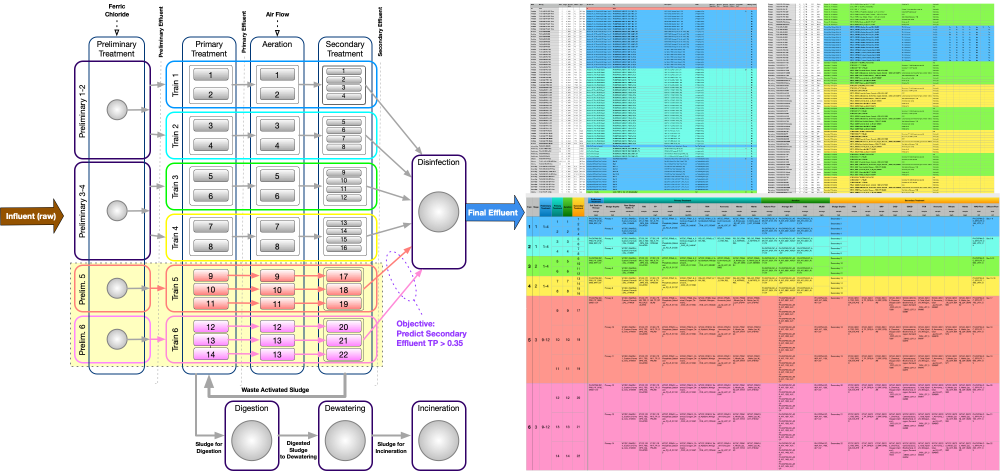

WasteWater Treatment Facility Operations


Observation #1
-
The best of the supervised models were only accurate and predicting "TP > 0.35mg/L" ~67% of
the time
Observation #2
-
Since this was time-series data over ~4 years, it was reviewed for trend and seasonality:
neither were detected
Observation #3: Regression Models
-
Linear Regression, SVR and Neural Network models were moderately successful
Observation #4: Classification Models
-
Only the Balanced Random Forest with SMOTEENN, Gradient Boosting, Ada Boost showed some
promise
Observation #5
-
Two unsupervised models - KMeans and Agglomerative Clustering - were tested
-
Both identified clusters where TP > 0.35 -- plotting TP against other factors did not show
any clear relationships
-
KMeans model with PCA showed distinct clusters
Observation #6
-
Feature importances for the model variations were inconsistent
-
TP (total phosphorus) correlates very strongly with SRP (dissolved phosphorus)
-
Removing SRP resulted in much worse performance for all models
Observation #7
-
The data frequency provided (daily values) did not allow for time lag to be used when
preparing the data for the models
Observation #8
-
The available data was mostly analytes, measured in a lab, and which are available hours or
days after the process is complete
-
The analytes from the primaries and secondaries were interpolated (using PCHIP) to fill in
gaps
-
There were significant gaps in the data available for some analytes in the primaries (TKN,
Ammonia, Nitrate, Nitrite), and were not used in the models
Observation #9
-
Train 14 showed better performance for most models -- data was only available for 2 years
for this train
-
Models for trains 9, 12 and 13 had much lower accuracy values
Outcome
-
None of the models were useful enough to accomplish the project goals
Next Steps
-
Determine if the data can be acquired at a higher frequency (currently daily... hourly or
higher may be better). This may require incorporating time lag into the model preparation
-
Identify which of the inputs are known at the time the process is running (not delayed by
lab testing)
-
Inquire if other inputs are available, specifically those which may have a greater possible
impact on the target (TP > 0.35)
-
Weather data (rainfall, temperature, barometric pressure, cloud cover, ...)
-
Aeration blower run-times (possibly via hydro usage)
❮
❯
Technical Terms
| Term |
Description |
| Aeration |
The process of adding air to water. In wastewater treatment, air is added to refreshen
wastewater and to keep solids in suspension. With mixtures of wastewater and activated
sludge, adding air provides mixing and oxygen for the microorganisms treating the
wastewater. |
| BOD |
Biochemical Oxygen on Demand -- an indirect reading of the organic content present in
wastewater. Specifically, it refers to the amount of oxygen consumed to biologically degrade
the organic material. It’s very expensive to treat, typically requiring a biological
treatment technology like activated sludge |
| cBOD |
Carbonaceous Biochemical Oxygen Demand -- the amount of oxygen required, under controlled
conditions, to oxidize any carbon containing matter present in a water by biological means.
|
| COD |
Chemical Oxygen Demand -- an indirect reading of the organic content of wastewater.
Specifically, it refers to the amount of oxygen that is required to chemically degrade the
organic material. |
| DO |
Dissolved Oxygen -- an indication of how much oxygen is present in water. |
| Effluent |
Wastewater (treated or untreated) that flows out of a facility. |
| HW |
Headworks -- the facilities where wastewater enters a wastewater treatment plant. |
| Influent |
Wastewater received at a wastewater treatment facility and includes waste from homes,
businesses and industry; a mixture of water and dissolved and suspended solids.
|
| MLSS |
Mixed Liquor Suspended Solids -- the total concentration of solids in the aeration tanks and
includes both inorganic and organic solids.
|
| Sludge |
A mixture of solids and water produced during the treatment of wastewater.
|
| SRP |
Soluble Reactive Phosphorous, or Dissolved Phosphorous -- a measure of orthophosphate, the
filterable (soluble, inorganic) fraction of phosphorus.
|
| TKN |
Total Kjeldahl Nitrogen -- a pollutant found in domestic sewage that is typically a
surcharge parameter for industries.
|
| TP |
Total phosphorus -- a measure of all the forms of phosphorus, dissolved or particulate.
|
| TSS |
Total Suspended Solids -- solids in water that can be trapped by a filter.
|
| WAS |
Waste Activated Sludge -- the activated sludge removed from the secondary treatment process.
|